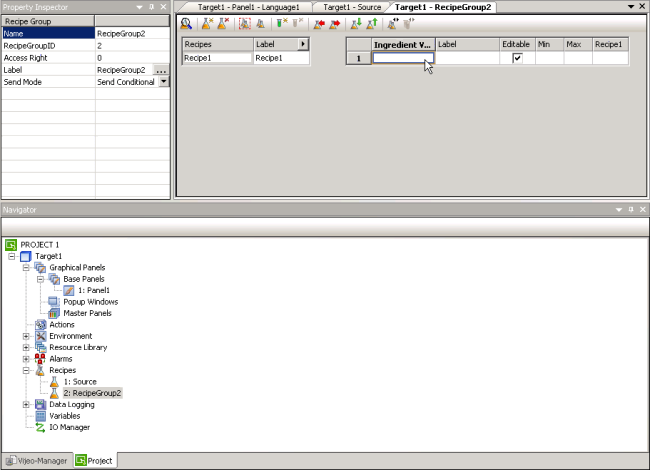

|
|
|
|
|
|
|
|
To create and manage a recipe group, use the Recipes node in the Navigator window. You can create up to 32 recipe groups for each target.
Right-click the Recipes node, and select New Recipe Group or New Parison Recipe Group.
You have created a new recipe group. The Property Inspector for the new recipe group is displayed with default settings in the properties. The Recipe Group Editor is also displayed.

If you need to make changes to the recipe group properties, use the Property Inspector.
|
Property |
Description |
|
Name |
The recipe group's name. Whenever a recipe group is created, a default name is generated. When renaming a recipe group, its name must be unique within the target, must contain no more than 32 valid characters, and must follow the naming conventions. For more information, see Appendix 9, Naming Conventions.
|
|
RecipeGroupID |
Displays a unique recipe group ID, ranging from 1 to 65535. |
|
Recipe Group Type |
Use this property to change a recipe group type to Normal or Parison. |
|
Access Right |
Enter a value from 0 to 65535 to indicate the access rights for the recipe group. Set to 0, if you do not want to use security. For more information, see Section 17.8.1, Setting the User Access Right. |
|
Label |
Displays the recipe group name that will be displayed in runtime for the specified language. The label can be up to 32 characters long. Click to open the Recipe Group Label Editor and edit the label for other languages. For information about multi-language projects, see Section 20.2, Switching Languages. You can overwrite the text string in all languages in the recipe group or copy the text string to all languages with no text string input. |
|
Send Mode |
Specify how you want the recipe data to be transmitted to and from the equipment during a Send or Snapshot operation. Select conditional or unconditional.
|
An empty recipe group entry is automatically created in the Variable Editor to contain the ingredient variables for this recipe group.
Create variables in the recipe editor by adding ingredients. When you add ingredients and assign a variable, the variable is also added to the recipe group structure. In the Recipe Group Editor, you can specify that variables created in the Navigator window's Variable List be included in the Recipe Group List.
Recipe Group Variables used for ingredient values can be an integer type, REAL, BOOL, a Block Integer type, or Block REAL variables. For more information, see Chapter 6, Creating Variables.
Parison Group Variables can only be one Block INT or one array of integer type with 64 to 400 elements.
In the Recipe Group Editor, define or edit the ingredients, recipes, and other values for the recipe group. For more information, see Section 17.3.4, Editing a Recipe Group.